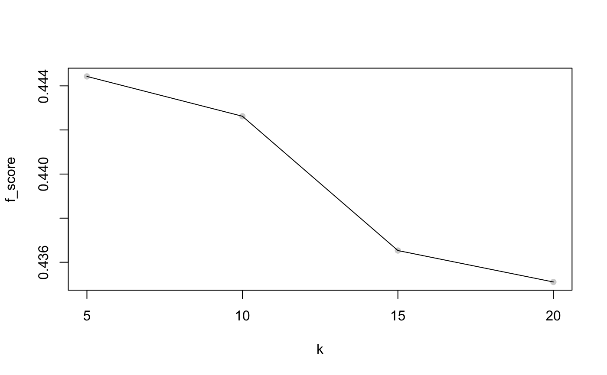

A function to perform location/scale adjustment to data as the input of RUVIII which also provides the option to select optimal RUVk according to the silhouette coefficient
scRUVIII(Y = Y, M = M, ctl = ctl, fullalpha = NULL, k = k, cell_type = NULL, batch = NULL, return_all_RUV = TRUE, fast_svd = FALSE, rsvd_prop = 0.1)
| Y | The unnormalised SC data. A m by n matrix, where m is the number of observations and n is the number of features. |
|---|---|
| M | The replicate mapping matrix. The mapping matrix has m rows (one for each observation), and each column represents a set of replicates. The (i, j)-th entry of the mapping matrix is 1 if the i-th observation is in replicate set j, and 0 otherwise. See ruv::RUVIII for more details. |
| ctl | An index vector to specify the negative controls. Either a logical vector of length n or a vector of integers. |
| fullalpha | Not used. Please ignore. |
| k | The number of unwanted factors to remove. This is inherited from the ruvK argument from the scMerge::scMerge function. |
| cell_type | An optional vector indicating the cell type information for each cell
in the batch-combined matrix. If it is |
| batch | Batch information inherited from the scMerge::scMerge function. |
| return_all_RUV | Whether to return extra information on the RUV function, inherited from the scMerge::scMerge function |
| fast_svd | If |
| rsvd_prop | If |
A list consists of:
RUV-normalised matrices: If k has multiple values, then the RUV-normalised matrices using all the supplied k values will be returned.
optimal_ruvK: The optimal RUV k value as determined by silhouette coefficient.
L = ruvSimulate(m = 200, n = 1000, nc = 100, nCelltypes = 3, nBatch = 2, lambda = 0.1, sce = FALSE) Y = t(log2(L$Y + 1L)); M = L$M; ctl = L$ctl; batch = L$batch; res = scRUVIII(Y = Y, M = M, ctl = ctl, k = c(5, 10, 15, 20), batch = batch)#> Selecting optimal RUVk #> No cell type info, replicate matrix will be used as cell type info#>